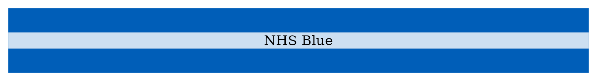
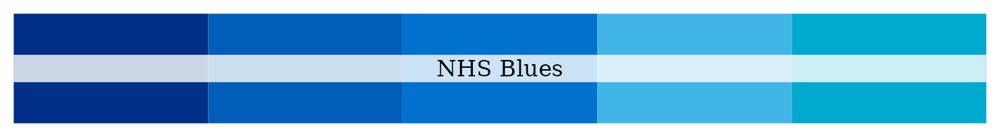
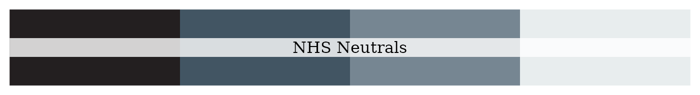
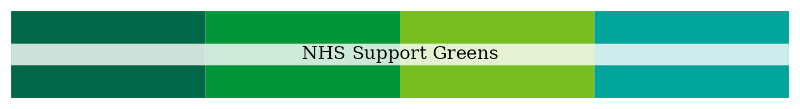
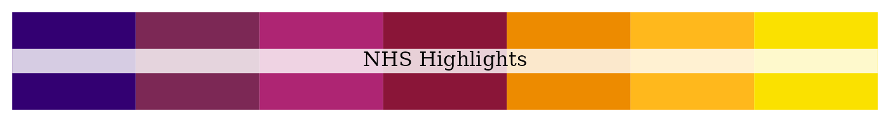
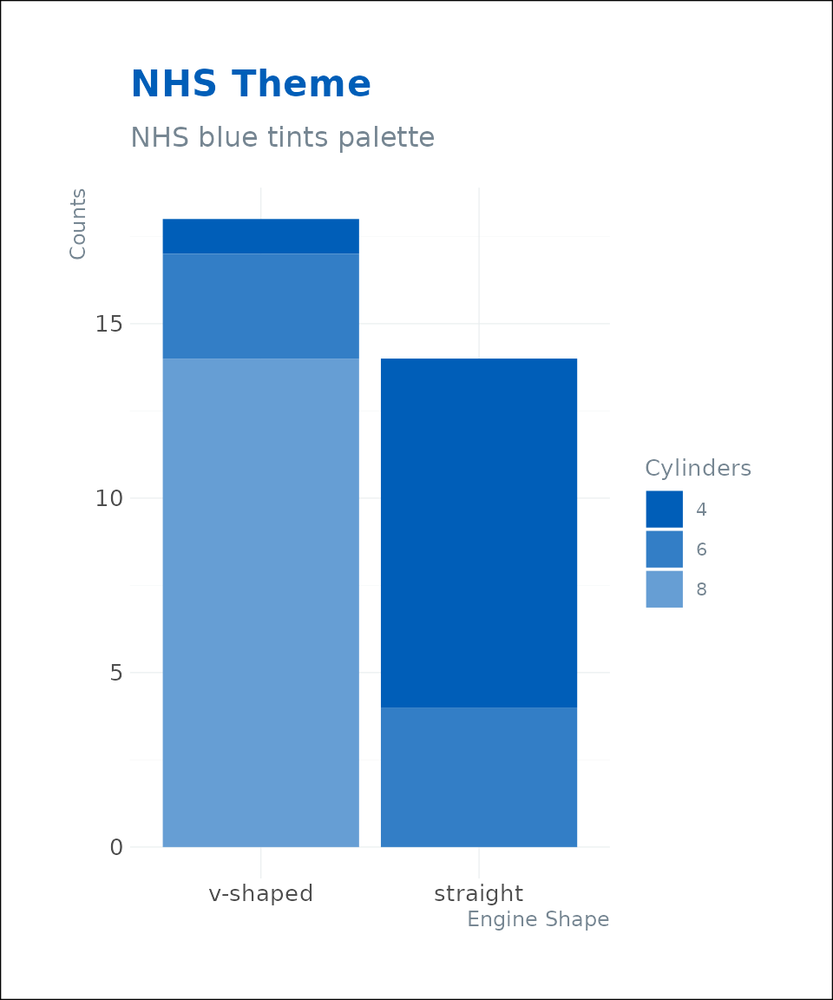
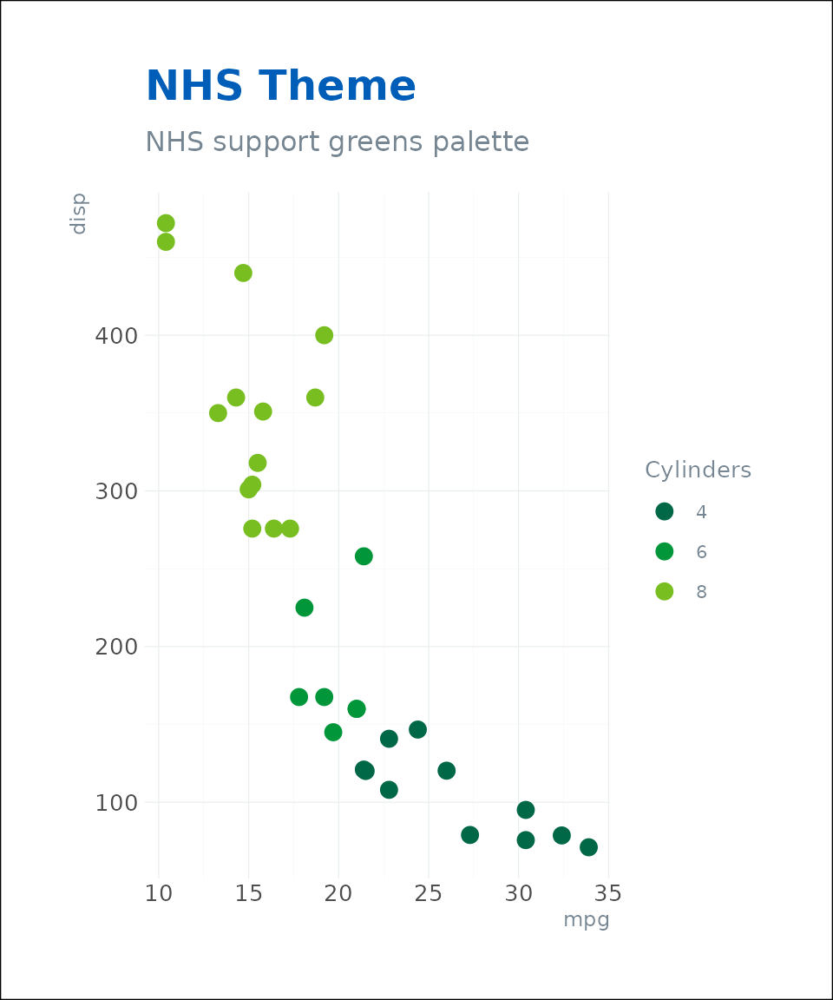

The NHS (National Health Service) is the publicly funded healthcare system in the United Kingdom. Established in 1948, it provides comprehensive healthcare services that are largely free at the point of use for residents of the UK. The NHS is funded primarily through taxation and is based on the principle of equity, aiming to provide healthcare services based on need rather than the ability to pay.
The NHS covers a wide range of healthcare services, including general practitioner (GP) services, hospital care, mental health services, dental care, and public health initiatives. It operates through a network of hospitals, clinics, GP surgeries, and other healthcare facilities across England, Scotland, Wales, and Northern Ireland.
NHS colours
Core colours
The core NHS colours are blue and white:

This is supplemented by four additional groups of colours. All colours in the palette meet at least an AA accessibility rating, with many achieving the highest AAA rating when used with appropriate contrasts on suitable backgrounds.
Level 1: Blue tones
Level 1 of the NHS colour palette consists of various shades of blue, emphasizing the association with blue and white. It provides lighter and darker alternatives to the main NHS Blue colour, offering tonal variety while maintaining the core brand identity.

Level 2: Neutrals
These additional colours complement the primary blues in the palette. Black and dark grey are suitable for text depending on the context. Lighter greys can serve as backgrounds, especially online. White serves as the primary neutral base. Proper use of these colours enhances the overall blue and white aesthetic.

Level 3: Support Greens
Green, being closely related to blue in the colour spectrum, complements the blue and white palette. When used moderately and in a supporting role, it maintains the association with blue and white without compromising it. However, if green becomes too dominant, it may hinder people’s ability to instantly recognize the NHS as the source of information.

Level 4: Highlights
Highlights are effective for emphasizing details, adding warmth to the blue theme, and offering accent colours for NHS entities to distinguish themselves. However, excessive use can drastically alter the overall appearance and disassociate the communication from the NHS brand. Therefore, it’s advised to use highlights sparingly and avoid large blocks of these colours.

NHS ggplot2 theme
An NHS ggplot2 theme function called
theme_nhs() is included in the paleta package.
Following are examples of how it can be used.

